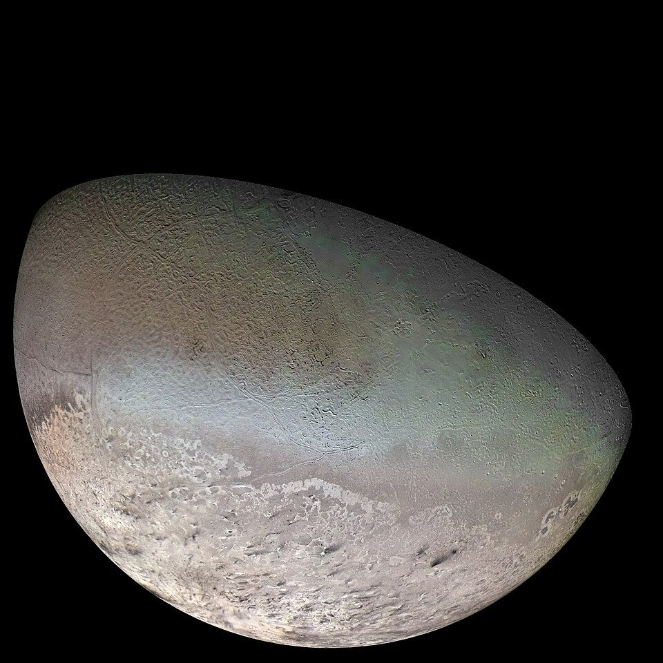

Neptune
The farthest planet: a deep blue world with the fastest winds in the solar system, discovered thanks to mathematics.


Neptune is the eighth and last planet of the solar system, some 4.5 billion kilometres from the Sun: thirty times farther than Earth. From there the Sun looks like a very bright star, and its light takes more than four hours to arrive.
Discovered with pen and paper
Neptune is the only planet found by calculation before it was seen. Astronomers noticed that Uranus was drifting from its predicted orbit, as if something invisible were pulling on it. The Frenchman Urbain Le Verrier worked out where that unknown planet should be and sent his prediction to Berlin. On the night of 23 September 1846, Johann Galle found it less than one degree from the predicted spot.
The fastest winds
Although it receives very little energy from the Sun, Neptune has the most turbulent atmosphere in the solar system. Its winds reach 2,100 km/h, faster than the speed of sound on Earth. In 1989 Voyager 2 photographed the Great Dark Spot, an Earth-sized storm that had vanished a few years later.
Its deep blue colour comes from methane, as on Uranus, although the classic Voyager images exaggerated the tone. Reprocessed in 2024, they show that the two ice giants are more alike in colour than once thought.
Diamond rain?
Inside Uranus and Neptune, pressures and temperatures are so high that methane could break down and its carbon turn into diamond, slowly sinking towards the centre like rain. Something similar has been reproduced in the laboratory with very powerful lasers.
Triton, a backwards moon
Neptune has 16 known moons. The largest, Triton, orbits the planet in the opposite direction to its rotation, something no other large moon does. That suggests it is a Kuiper belt object, similar to Pluto, captured by Neptune. Triton has nitrogen geysers that throw dark plumes 8 km high, and one of the coldest surfaces known, at −235 °C.

.jpg){kind=link}
A very long year
Neptune takes 165 years to orbit the Sun. Since its discovery in 1846 it has completed just one orbit, which it finished in July 2011. Like Uranus, it also has thin, dark rings, one of which has curious brighter "arcs".
Videos to understand it better
- Neptune 101 | National GeographicNational Geographic · 4.4M views
- James Webb's New Images of Neptune Have Left Scientists ConfusedAstrum · 3.5M views
Videos are from YouTube and belong to their creators. They only load when you click them. See all videos →